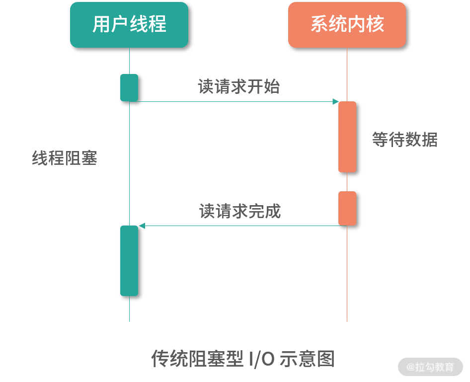
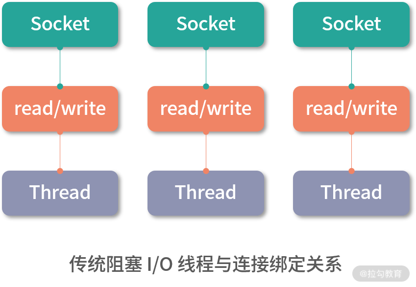
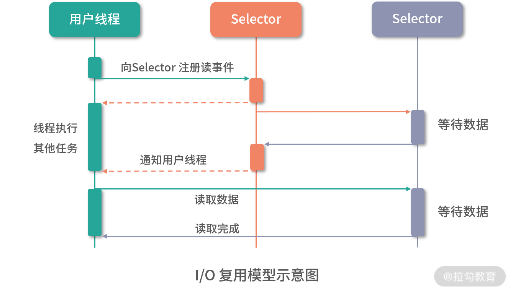
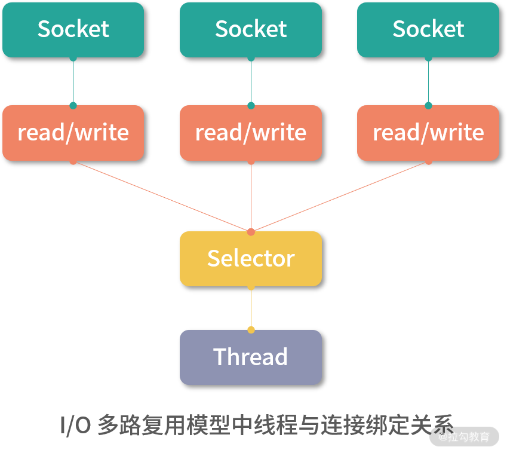
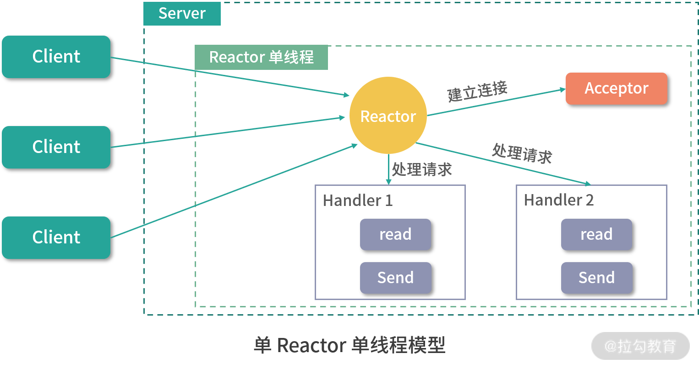
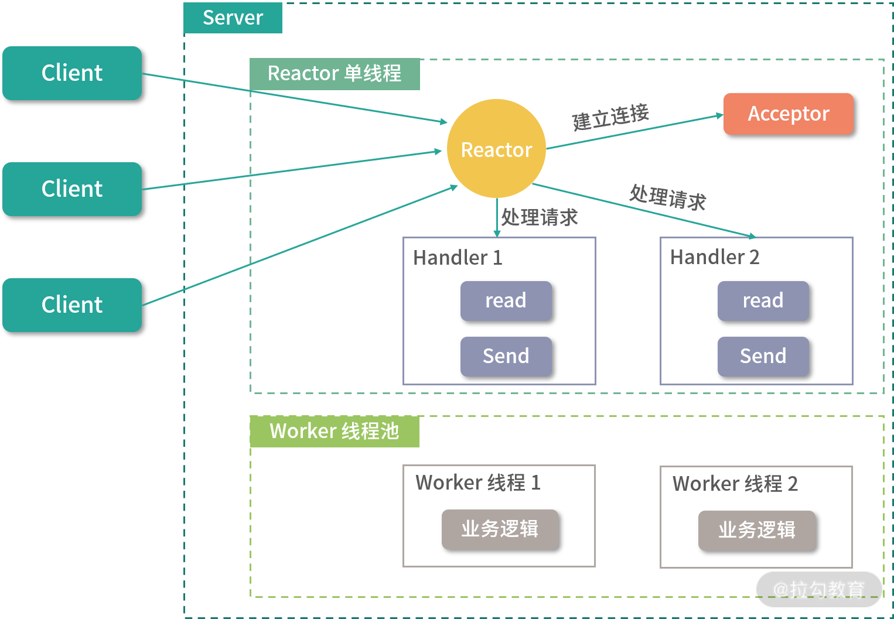
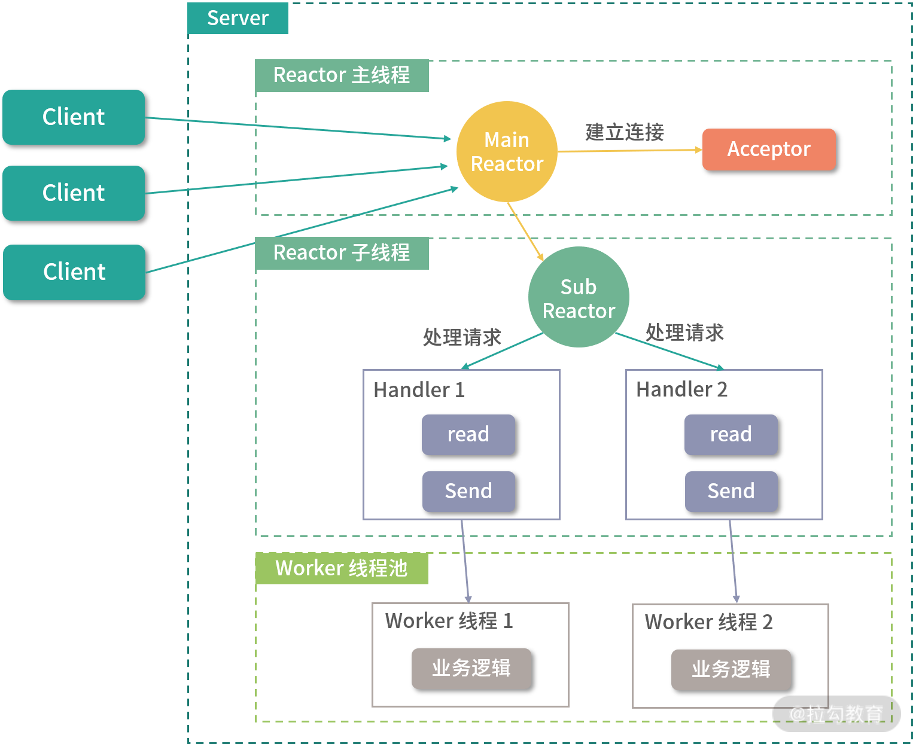
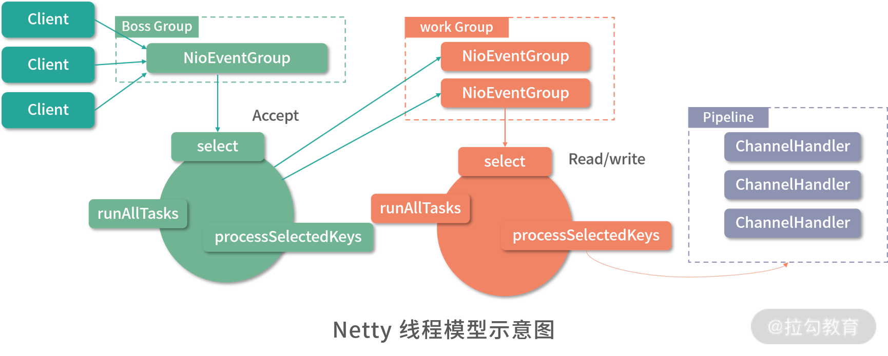

- 00 开篇词 深入掌握 Dubbo 原理与实现，提升你的职场竞争力.md.html
- 01 Dubbo 源码环境搭建：千里之行，始于足下.md.html
- 02 Dubbo 的配置总线：抓住 URL，就理解了半个 Dubbo.md.html
- 03 Dubbo SPI 精析，接口实现两极反转（上）.md.html
- 04 Dubbo SPI 精析，接口实现两极反转（下）.md.html
- 05 海量定时任务，一个时间轮搞定.md.html
- 06 ZooKeeper 与 Curator，求你别用 ZkClient 了（上）.md.html
- 07 ZooKeeper 与 Curator，求你别用 ZkClient 了（下）.md.html
- 08 代理模式与常见实现.md.html
- 09 Netty 入门，用它做网络编程都说好（上）.md.html
- 10 Netty 入门，用它做网络编程都说好（下）.md.html
- 11 简易版 RPC 框架实现（上）.md.html
- 12 简易版 RPC 框架实现（下）.md.html
- 13 本地缓存：降低 ZooKeeper 压力的一个常用手段.md.html
- 14 重试机制是网络操作的基本保证.md.html
- 15 ZooKeeper 注册中心实现，官方推荐注册中心实践.md.html
- 16 Dubbo Serialize 层：多种序列化算法，总有一款适合你.md.html
- 17 Dubbo Remoting 层核心接口分析：这居然是一套兼容所有 NIO 框架的设计？.md.html
- 18 Buffer 缓冲区：我们不生产数据，我们只是数据的搬运工.md.html
- 19 Transporter 层核心实现：编解码与线程模型一文打尽（上）.md.html
- 20 Transporter 层核心实现：编解码与线程模型一文打尽（下）.md.html
- 21 Exchange 层剖析：彻底搞懂 Request-Response 模型（上）.md.html
- 22 Exchange 层剖析：彻底搞懂 Request-Response 模型（下）.md.html
- 23 核心接口介绍，RPC 层骨架梳理.md.html
- 24 从 Protocol 起手，看服务暴露和服务引用的全流程（上）.md.html
- 25 从 Protocol 起手，看服务暴露和服务引用的全流程（下）.md.html
- 26 加餐：直击 Dubbo “心脏”，带你一起探秘 Invoker（上）.md.html
- 27 加餐：直击 Dubbo “心脏”，带你一起探秘 Invoker（下）.md.html
- 28 复杂问题简单化，代理帮你隐藏了多少底层细节？.md.html
- 29 加餐：HTTP 协议 + JSON-RPC，Dubbo 跨语言就是如此简单.md.html
- 30 Filter 接口，扩展 Dubbo 框架的常用手段指北.md.html
- 31 加餐：深潜 Directory 实现，探秘服务目录玄机.md.html
- 32 路由机制：请求到底怎么走，它说了算（上）.md.html
- 33 路由机制：请求到底怎么走，它说了算（下）.md.html
- 34 加餐：初探 Dubbo 动态配置的那些事儿.md.html
- 35 负载均衡：公平公正物尽其用的负载均衡策略，这里都有（上）.md.html
- 36 负载均衡：公平公正物尽其用的负载均衡策略，这里都有（下）.md.html
- 37 集群容错：一个好汉三个帮（上）.md.html
- 38 集群容错：一个好汉三个帮（下）.md.html
- 39 加餐：多个返回值不用怕，Merger 合并器来帮忙.md.html
- 40 加餐：模拟远程调用，Mock 机制帮你搞定.md.html
- 41 加餐：一键通关服务发布全流程.md.html
- 42 加餐：服务引用流程全解析.md.html
- 43 服务自省设计方案：新版本新方案.md.html
- 44 元数据方案深度剖析，如何避免注册中心数据量膨胀？.md.html
- 45 加餐：深入服务自省方案中的服务发布订阅（上）.md.html
- 46 加餐：深入服务自省方案中的服务发布订阅（下）.md.html
- 47 配置中心设计与实现：集中化配置 and 本地化配置，我都要（上）.md.html
- 48 配置中心设计与实现：集中化配置 and 本地化配置，我都要（下）.md.html
- 49 结束语 认真学习，缩小差距.md.html
09 Netty 入门，用它做网络编程都说好（上）
了解 Java 的同学应该知道，JDK 本身提供了一套 NIO 的 API，但是这一套原生的 API 存在一系列的问题。
- Java NIO 的 API 非常复杂。 要写出成熟可用的 Java NIO 代码，需要熟练掌握 JDK 中的 Selector、ServerSocketChannel、SocketChannel、ByteBuffer 等组件，还要理解其中一些反人类的设计以及底层原理，这对新手来说是非常不友好的。
- 如果直接使用 Java NIO 进行开发，难度和开发量会非常大。我们需要自己补齐很多可靠性方面的实现，例如，网络波动导致的连接重连、半包读写等。这就会导致一些本末倒置的情况出现：核心业务逻辑比较简单，但补齐其他公共能力的代码非常多，开发耗时比较长。这时就需要一个统一的 NIO 框架来封装这些公共能力了。
- JDK 自身的 Bug。其中比较出名的就要属 Epoll Bug 了，这个 Bug 会导致 Selector 空轮询，CPU 使用率达到 100%，这样就会导致业务逻辑无法执行，降低服务性能。
Netty 在 JDK 自带的 NIO API 基础之上进行了封装，解决了 JDK 自身的一些问题，具备如下优点：
- 入门简单，使用方便，文档齐全，无其他依赖，只依赖 JDK 就够了。
- 高性能，高吞吐，低延迟，资源消耗少。
- 灵活的线程模型，支持阻塞和非阻塞的I/O 模型。
- 代码质量高，目前主流版本基本没有 Bug。
正因为 Netty 有以上优点，所以很多互联网公司以及开源的 RPC 框架都将其作为网络通信的基础库，例如，Apache Spark、Apache Flink、 Elastic Search 以及我们本课程分析的 Dubbo 等。
下面我们将从 I/O 模型和线程模型的角度详细为你介绍 Netty 的核心设计，进而帮助你全面掌握 Netty 原理。
Netty I/O 模型设计
在进行网络 I/O 操作的时候，用什么样的方式读写数据将在很大程度上决定了 I/O 的性能。作为一款优秀的网络基础库，Netty 就采用了 NIO 的 I/O 模型，这也是其高性能的重要原因之一。
1. 传统阻塞 I/O 模型
在传统阻塞型 I/O 模型（即我们常说的 BIO）中，如下图所示，每个请求都需要独立的线程完成读数据、业务处理以及写回数据的完整操作。

一个线程在同一时刻只能与一个连接绑定，如下图所示，当请求的并发量较大时，就需要创建大量线程来处理连接，这就会导致系统浪费大量的资源进行线程切换，降低程序的性能。我们知道，网络数据的传输速度是远远慢于 CPU 的处理速度，连接建立后，并不总是有数据可读，连接也并不总是可写，那么线程就只能阻塞等待，CPU 的计算能力不能得到充分发挥，同时还会导致大量线程的切换，浪费资源。

2. I/O 多路复用模型
针对传统的阻塞 I/O 模型的缺点，I/O 复用的模型在性能方面有不小的提升。I/O 复用模型中的多个连接会共用一个 Selector 对象，由 Selector 感知连接的读写事件，而此时的线程数并不需要和连接数一致，只需要很少的线程定期从 Selector 上查询连接的读写状态即可，无须大量线程阻塞等待连接。当某个连接有新的数据可以处理时，操作系统会通知线程，线程从阻塞状态返回，开始进行读写操作以及后续的业务逻辑处理。I/O 复用的模型如下图所示：

Netty 就是采用了上述 I/O 复用的模型。由于多路复用器 Selector 的存在，可以同时并发处理成百上千个网络连接，大大增加了服务器的处理能力。另外，Selector 并不会阻塞线程，也就是说当一个连接不可读或不可写的时候，线程可以去处理其他可读或可写的连接，这就充分提升了 I/O 线程的运行效率，避免由于频繁 I/O 阻塞导致的线程切换。如下图所示：

从数据处理的角度来看，传统的阻塞 I/O 模型处理的是字节流或字符流，也就是以流式的方式顺序地从一个数据流中读取一个或多个字节，并且不能随意改变读取指针的位置。而在 NIO 中则抛弃了这种传统的 I/O 流概念，引入了 Channel 和 Buffer 的概念，可以从 Channel 中读取数据到 Buffer 中或将数据从 Buffer 中写入到 Channel。Buffer 不像传统 I/O 中的流那样必须顺序操作，在 NIO 中可以读写 Buffer 中任意位置的数据。
Netty 线程模型设计
服务器程序在读取到二进制数据之后，首先需要通过编解码，得到程序逻辑可以理解的消息，然后将消息传入业务逻辑进行处理，并产生相应的结果，返回给客户端。编解码逻辑、消息派发逻辑、业务处理逻辑以及返回响应的逻辑，是放到一个线程里面串行执行，还是分配到不同的线程中执行，会对程序的性能产生很大的影响。所以，优秀的线程模型对一个高性能网络库来说是至关重要的。
Netty 采用了 Reactor 线程模型的设计。 Reactor 模式，也被称为 Dispatcher 模式，核心原理是 Selector 负责监听 I/O 事件，在监听到 I/O 事件之后，分发（Dispatch）给相关线程进行处理。
为了帮助你更好地了解 Netty 线程模型的设计理念，我们将从最基础的单 Reactor 单线程模型开始介绍，然后逐步增加模型的复杂度，最终到 Netty 目前使用的非常成熟的线程模型设计。
1. 单 Reactor 单线程
Reactor 对象监听客户端请求事件，收到事件后通过 Dispatch 进行分发。如果是连接建立的事件，则由 Acceptor 通过 Accept 处理连接请求，然后创建一个 Handler 对象处理连接建立之后的业务请求。如果不是连接建立的事件，而是数据的读写事件，则 Reactor 会将事件分发对应的 Handler 来处理，由这里唯一的线程调用 Handler 对象来完成读取数据、业务处理、发送响应的完整流程。当然，该过程中也可能会出现连接不可读或不可写等情况，该单线程会去执行其他 Handler 的逻辑，而不是阻塞等待。具体情况如下图所示：

单 Reactor 单线程的优点就是：线程模型简单，没有引入多线程，自然也就没有多线程并发和竞争的问题。
但其缺点也非常明显，那就是性能瓶颈问题，一个线程只能跑在一个 CPU 上，能处理的连接数是有限的，无法完全发挥多核 CPU 的优势。一旦某个业务逻辑耗时较长，这唯一的线程就会卡在上面，无法处理其他连接的请求，程序进入假死的状态，可用性也就降低了。正是由于这种限制，一般只会在客户端使用这种线程模型。
2. 单 Reactor 多线程
在单 Reactor 多线程的架构中，Reactor 监控到客户端请求之后，如果连接建立的请求，则由Acceptor 通过 accept 处理，然后创建一个 Handler 对象处理连接建立之后的业务请求。如果不是连接建立请求，则 Reactor 会将事件分发给调用连接对应的 Handler 来处理。到此为止，该流程与单 Reactor 单线程的模型基本一致，唯一的区别就是执行 Handler 逻辑的线程隶属于一个线程池。

单 Reactor 多线程模型
很明显，单 Reactor 多线程的模型可以充分利用多核 CPU 的处理能力，提高整个系统的吞吐量，但引入多线程模型就要考虑线程并发、数据共享、线程调度等问题。在这个模型中，只有一个线程来处理 Reactor 监听到的所有 I/O 事件，其中就包括连接建立事件以及读写事件，当连接数不断增大的时候，这个唯一的 Reactor 线程也会遇到瓶颈。
3. 主从 Reactor 多线程
为了解决单 Reactor 多线程模型中的问题，我们可以引入多个 Reactor。其中，Reactor 主线程负责通过 Acceptor 对象处理 MainReactor 监听到的连接建立事件，当Acceptor 完成网络连接的建立之后，MainReactor 会将建立好的连接分配给 SubReactor 进行后续监听。
当一个连接被分配到一个 SubReactor 之上时，会由 SubReactor 负责监听该连接上的读写事件。当有新的读事件（OP_READ）发生时，Reactor 子线程就会调用对应的 Handler 读取数据，然后分发给 Worker 线程池中的线程进行处理并返回结果。待处理结束之后，Handler 会根据处理结果调用 send 将响应返回给客户端，当然此时连接要有可写事件（OP_WRITE）才能发送数据。

主从 Reactor 多线程模型
主从 Reactor 多线程的设计模式解决了单一 Reactor 的瓶颈。主从 Reactor 职责明确，主 Reactor 只负责监听连接建立事件，SubReactor只负责监听读写事件。整个主从 Reactor 多线程架构充分利用了多核 CPU 的优势，可以支持扩展，而且与具体的业务逻辑充分解耦，复用性高。但不足的地方是，在交互上略显复杂，需要一定的编程门槛。
4. Netty 线程模型
Netty 同时支持上述几种线程模式，Netty 针对服务器端的设计是在主从 Reactor 多线程模型的基础上进行的修改，如下图所示：

Netty 抽象出两组线程池：BossGroup 专门用于接收客户端的连接，WorkerGroup 专门用于网络的读写。BossGroup 和 WorkerGroup 类型都是 NioEventLoopGroup，相当于一个事件循环组，其中包含多个事件循环 ，每一个事件循环是 NioEventLoop。
NioEventLoop 表示一个不断循环的、执行处理任务的线程，每个 NioEventLoop 都有一个Selector 对象与之对应，用于监听绑定在其上的连接，这些连接上的事件由 Selector 对应的这条线程处理。每个 NioEventLoopGroup 可以含有多个 NioEventLoop，也就是多个线程。
每个 Boss NioEventLoop 会监听 Selector 上连接建立的 accept 事件，然后处理 accept 事件与客户端建立网络连接，生成相应的 NioSocketChannel 对象，一个 NioSocketChannel 就表示一条网络连接。之后会将 NioSocketChannel 注册到某个 Worker NioEventLoop 上的 Selector 中。
每个 Worker NioEventLoop 会监听对应 Selector 上的 read/write 事件，当监听到 read/write 事件的时候，会通过 Pipeline 进行处理。一个 Pipeline 与一个 Channel 绑定，在 Pipeline 上可以添加多个 ChannelHandler，每个 ChannelHandler 中都可以包含一定的逻辑，例如编解码等。Pipeline 在处理请求的时候，会按照我们指定的顺序调用 ChannelHandler。
总结
在本课时我们重点介绍了网络 I/O 的一些背景知识，以及 Netty 的一些宏观设计模型。
- 首先，我们介绍了 Java NIO 的一些缺陷和不足，这也是 Netty 等网络库出现的重要原因之一。
- 接下来，我们介绍了 Netty 在 I/O 模型上的设计，阐述了 I/O 多路复用的优势。
- 最后，我们从基础的单 Reactor 单线程模型开始，一步步深入，介绍了常见的网络 I/O 线程模型，并介绍了 Netty 目前使用的线程模型。
当然，关于 Netty 的相关内容，也欢迎你在留言区与我分享和交流。